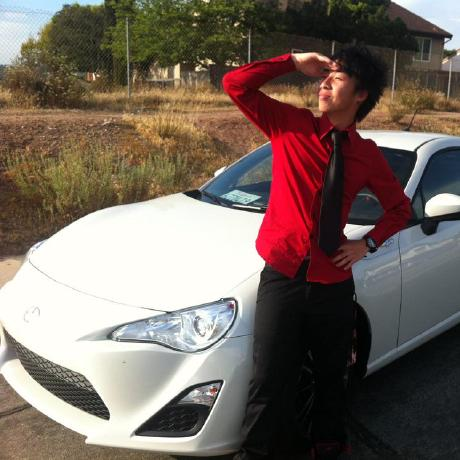

About Me

My name is Calvin, 24 years of age, soon to be 25. I am currently enrolled in a coding bootcamp for web development at UCSD extension. I am looking to become a full stack developer.
Other things that I am interested in are games, food and sports. I mainly play PC games, as of lately, the games I've been mainly playing are CS:GO and Pubg. A few sports that I play most frequent are basketball, baseball and badminton.
When it comes to food, I love eating, anything from food stalls to fine dining and everything in between. Hoping to be able to travel the world to taste everything.